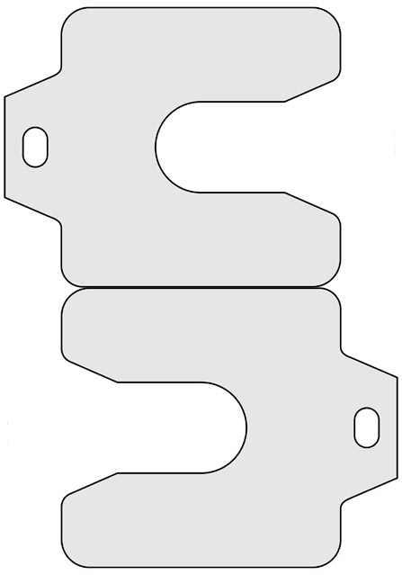

|  |
(SSHIM) |
In typical security architectures, users access internal resources by first logging into an SSH bastion system that is locked down to a high degree to severely reduce the possibility of external compromise. Such architectures can be configured to allow remote commands such as scp and rsync to operate between an external host and internal host through an intermediate hop to the bastion host. Due to the stateful nature of SSH connections, when a bastion host becomes unavailable due to hardware/software failures or planned maintenance, all active remote commands will be terminated. Since security updates must be applied to systems in a timely manner and many updates require system reboots, it is difficult to provide stable 24x7 access to users without compromising either security or usability.
SSHIM is a component that sits between the local program and the SSH channel and again between the SSH channel and the remote side of the program. It is invoked using options that change the program used to spawn the SSH channel (e.g. rsync's -e option or scp's -S option). When first invoked, SSHIM initiates the SSH channel and instead of calling the remote side of the local program, invokes itself on the remote system, which starts a limited daemon that itself invokes the remote side. Because the two sides of the local program are connected to SSHIM instances instead of SSH, they are unaware when the SSH channel is broken. When SSHIM detects a channel failure, the local side respawns the connection and attempts to reconnect to its remote counterpart. When successful, the remote command continues its operation as if the connection were stable.
SSHIM is unique in its ability to provide resilient SSH connectivity without changes to the SSH protocol itself. In particular, an organization using the previously described bastion architecture can deploy two (or more) redundant systems. When updates to the active bastion are necessary, the passive bastion can simply take over the active IP address using standard techniques such as gratuitous ARP. If the SSHIM tool is being used for all connections, remote commands will transparently reroute through the new active bastion when the new passive bastion is updated without any failures noticeable to the user.